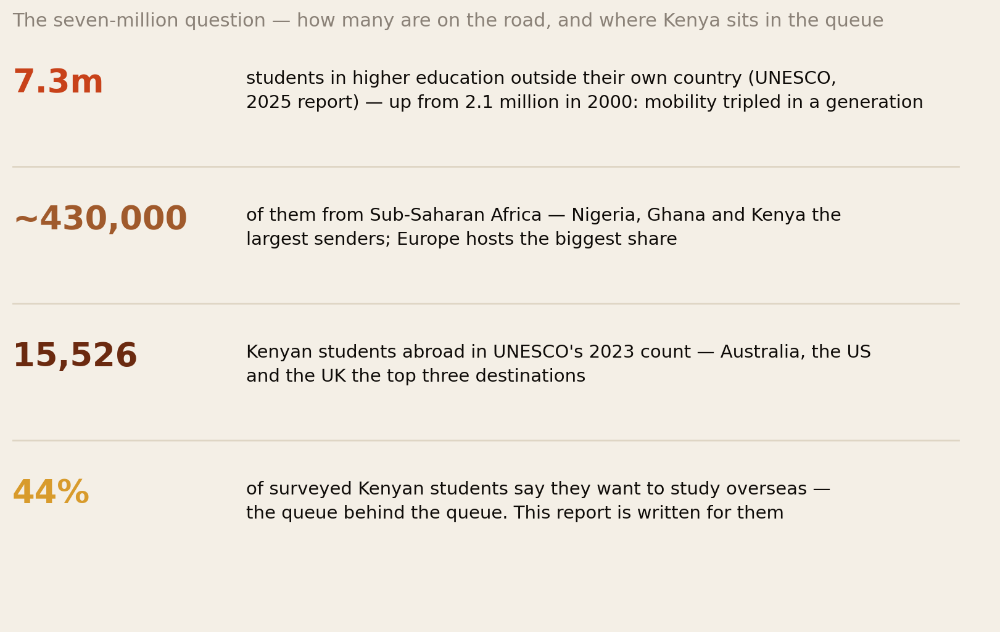
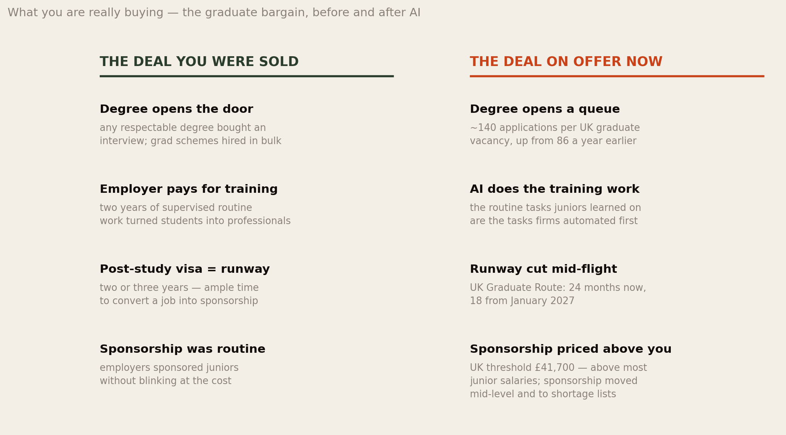
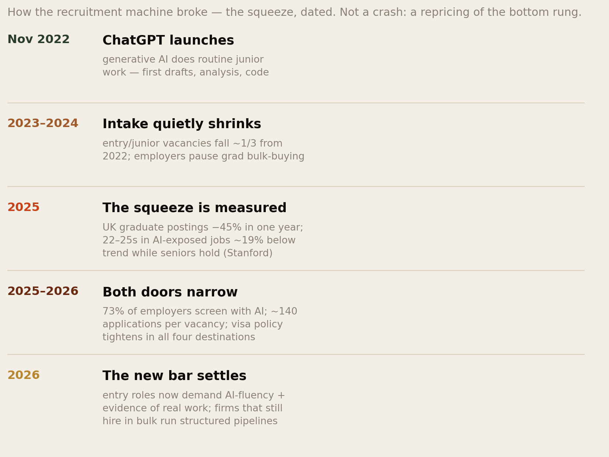
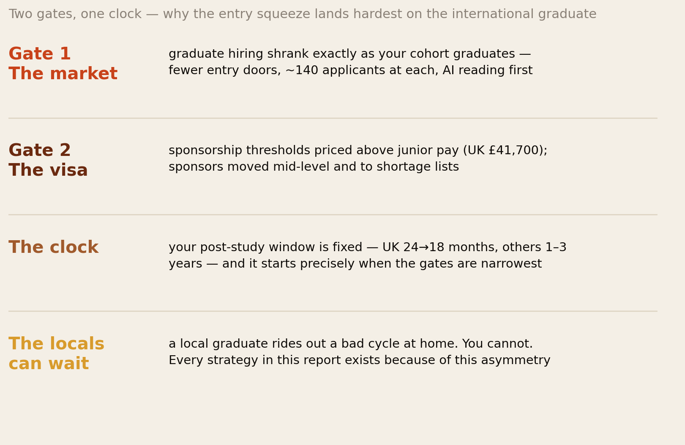
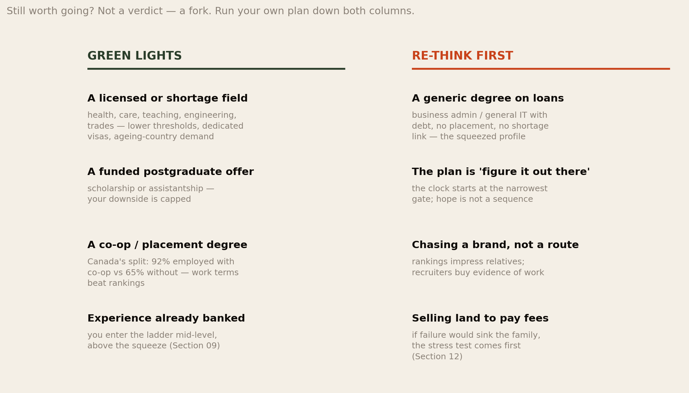
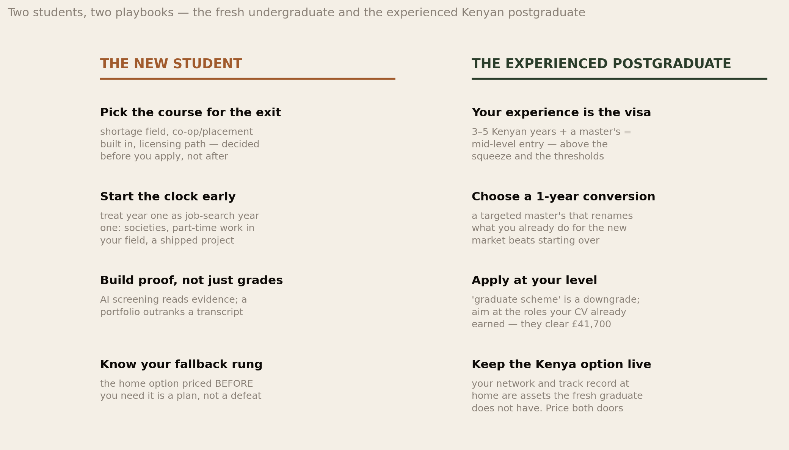
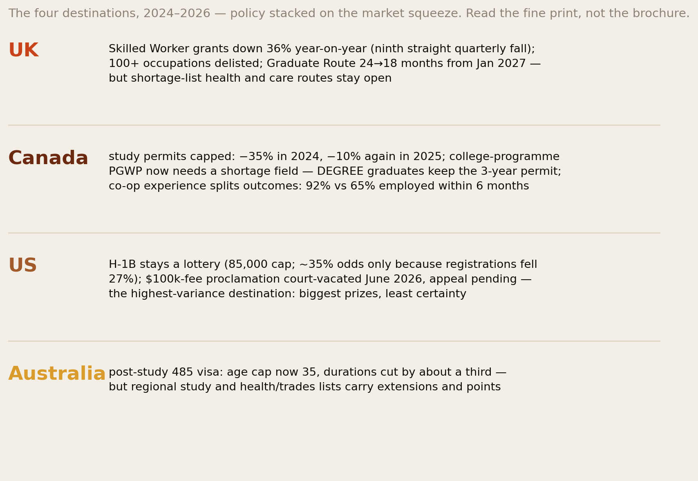
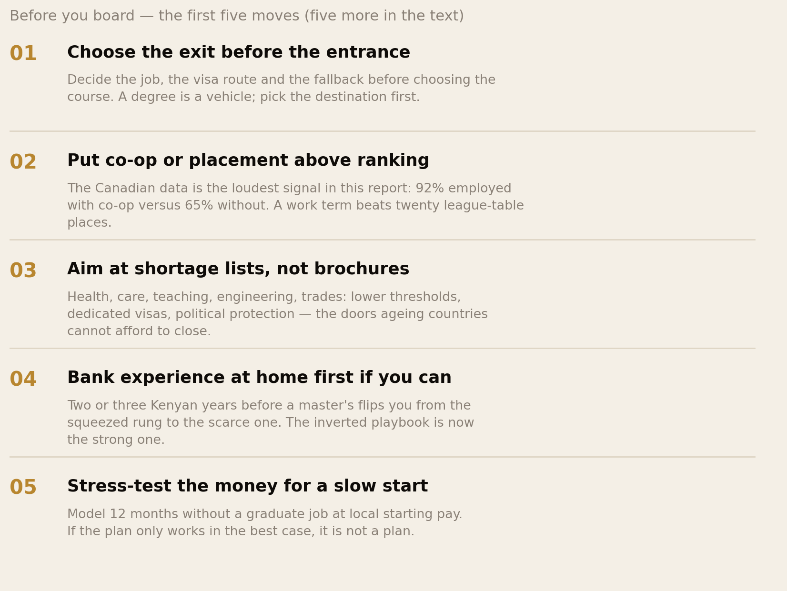

Before You Board.
This is the report we wish someone handed out at every education fair. 7.3 million students now study outside their own countries, and most of them — and most of the families funding them — are buying a deal that quietly changed while the brochures stayed the same: graduate postings down 45% in a year in the UK, roughly 140 applications chasing each vacancy, 73% of employers screening with AI, and post-study visas shortening in every major destination. This is not a report telling you to stay home. It is a pre-departure briefing: how the AI squeeze on entry jobs actually happened, what it means at each gate you will pass through — and two complete playbooks, one for the student going fresh, one for the professional going after years of Kenyan experience. Read it before you pay anything.
Section 01The Short Version
If you are planning to study abroad — or funding someone who is — here is the whole report in five findings. The rest of the document is the evidence, and the playbooks.
- The product changed; the marketing did not. What a foreign degree really sold was never lectures — it was a sequence: degree → graduate job → sponsorship → career. AI broke the second link, which strains every link after it. UK graduate postings fell 45% in a year; large employers now report ~140 applications per graduate vacancy (up from 86); 73% of employers screen applications with AI. The degree still teaches. It no longer converts on its own.
- The squeeze is specific, dated, and measurable — not a mood. From ChatGPT’s launch (November 2022) to today: entry and junior vacancies down roughly a third; US workers aged 22–25 in AI-exposed occupations ~19% below trend while experienced workers in the same fields hold or rise (Stanford payroll data); and policy tightening stacked on top in all four major destinations. Section 04 gives the timeline; Section 10 gives each country’s fine print.
- The visa clock makes it a different problem for you than for locals. A local graduate can wait out a bad market at their parents’ house. The international graduate faces two gates on one fixed clock: a shrunken hiring market and sponsorship thresholds (UK: £41,700) priced above junior pay — inside a post-study window the UK is cutting from 24 to 18 months in January 2027.
- It is still worth going — for the right plan. The strongest single number in this report: in Canada, international students with co-op (work-placement) experience are 92% employed within six months; without it, 65%. The value moved from the degree to what surrounds it: placements, shortage fields, licences, evidence of real work. HESA still finds 78% of international graduates employed 15 months after finishing — the door is narrower, not shut.
- Experience at home is now a visa strategy. The single biggest upgrade available to a Kenyan applicant: two to five years of real work before a targeted one-year master’s. You land above the entry squeeze, at salaries that clear the thresholds, applying for roles AI has made more valuable, not less. Section 09 is the full playbook for it.
Nobody at the education fair is paid to tell you the exit changed. This report is the missing page in the brochure: the machine you are flying toward, mapped honestly — and the routes through it that still work.
Section 02The Seven-Million Question

Start with the scale, because it explains the competition. About 7.3 million students are enrolled in higher education outside their own country — up from 2.1 million in 2000; international mobility tripled in a generation while global higher-education enrolment merely doubled. Roughly 430,000 come from Sub-Saharan Africa, with Nigeria, Ghana and Kenya the region’s dominant senders. Kenya specifically: UNESCO counted 15,526 Kenyan students abroad in 2023, with Australia, the United States and the United Kingdom the top three hosts — and in recent surveys, around 44% of Kenyan students say they want to study overseas. The queue behind the queue is enormous, and it is who this report is written for.
Two things follow from the scale. First, you are not competing against a country’s local graduates alone; you are competing against seven million mobile peers, many aimed at the same four Anglophone destinations and the same handful of “safe” courses — which is why differentiation (Sections 08–09) beats credentials. Second, host countries noticed the scale, and their politics turned: every major destination has spent 2024–2026 tightening the student-to-work pipeline — not because you personally are unwelcome, but because seven million is a number electorates can see. The tightening is not aimed at you. It will hit you anyway, unless you route around it.
Section 03The Deal You Were Sold

Every family WhatsApp group discussing school abroad is really discussing a sequence that worked for two decades: get the degree → catch a graduate job in the post-study window → convert it to sponsorship → build the life. It worked because of a bargain described in our New Ladder research: employers bought graduates in bulk and paid for their training with two years of supervised routine work, because someone had to do the routine work. The post-study visa was generous runway; sponsorship of juniors was routine; the degree — almost any degree from a recognised university — was the ticket that started it all. Uncles and aunties who travelled in 2010 or 2015 are not lying when they describe this world. They are describing a discontinued product.
Hold the load-bearing detail from that bargain, because everything in the next section turns on it: the entry job existed because the routine work existed. Nobody hired juniors out of kindness. They hired them because reconciliations, first drafts, test scripts and minutes had to be done by someone — and training came bundled with the grunt work. Then a machine arrived that does grunt work.
Section 04How the Machine Broke: The Squeeze, Dated

Here is how it has been happening — dated, so you can see it is a process, not a panic. November 2022: generative AI ships, and its first proven competence is precisely the routine information work entry jobs were made of: first drafts, standard letters, boilerplate code, basic analysis. 2023–2024: employers do not fire juniors en masse — they quietly stop replacing them; entry and junior vacancies drift down roughly a third from their 2022 peak while total employment stays healthy, so nothing makes headlines. 2025: the squeeze becomes measurable. UK graduate-specific postings drop 45% in a single year to their lowest since 2018; Stanford’s payroll-data research shows 22–25-year-olds in AI-exposed occupations ~19% below their employment trend while experienced workers in the same occupations hold or gain — the “level split” that is this series’ central finding. 2025–2026: both doors narrow at once: 73% of employers screen with AI, application volumes explode (~140 per UK graduate vacancy, up from 86 — partly because AI also made applying effortless, clogging the funnel), and all four destination governments tighten student and post-study routes. 2026: a new bar settles: the entry roles that survive demand AI-fluency plus evidence of real work, and firms still hiring at scale run structured, calendar-locked pipelines — miss the autumn window, wait a year.
Two honesty notes before you build a plan on this. First, the attribution is contested and our New Ladder report holds the debate in full: LinkedIn’s data blames interest rates more than AI; a Danish study found no average effect in its window; the graduate squeeze partly predates ChatGPT. For your decision it barely matters — the door is narrower under every explanation. Second, it is a squeeze, not a wall: HESA’s Graduate Outcomes survey still finds 78% of international graduates in work 15 months after finishing, and some employers are expanding entry hiring (IBM says it is tripling US entry-level intake in 2026). People are getting through. The question this report answers is which people, and how.
Section 05Two Gates, One Clock

Understand exactly why this squeeze is your problem in a way it is not your classmates’. The local graduate who cannot find work moves home, temps, retries next cycle — inconvenient, not fatal. You cannot. Your post-study permission is a fixed clock — two years in the UK today (18 months if you graduate into the post-January-2027 rules), one to three years elsewhere — and it starts ticking at graduation, which is to say: at the precise moment the market gate is narrowest. Behind the market gate stands the visa gate: the UK’s Skilled Worker threshold sits at £41,700, above what most junior roles pay, so even a graduate who wins a rare entry seat can find it cannot legally sponsor them. And behind both gates, the employer’s quiet calculus: why pay visa fees and compliance costs for a junior when AI plus abundant local applicants exist? Sponsorship did not vanish — it migrated up the ladder (mid-level and senior hires clear the thresholds easily) and out to the shortage lists (health, care, teaching, engineering, trades — where ageing electorates need people no machine supplies).
Read that last sentence again, because the entire strategy half of this report is built on it. The door abroad is open at the top of the ladder and at the hands-and-heart occupations — and nearly shut at the generic junior office rung in between. Every move in Sections 08–11 is a way of arriving at one of the open doors instead of queueing at the closed one.
Section 06The Numbers the Education Fair Skips
Four numbers belong in every decision, and none appears in a prospectus:
- 78% — and its shadow. HESA finds 78% of international graduates in the UK employed 15 months out. Sounds fine — but “employed” includes any work: Eurostat finds 41.4% of employed tertiary-educated non-EU citizens working below their qualification level, versus 20% of nationals. The risk is not unemployment; it is the survival job that eats the visa clock. Employed and stuck is the modal bad outcome, not jobless.
- 92% versus 65%. Statistics Canada: international students with co-op experience are 92% employed within six months of graduating; without co-op, 65%. A 27-point gap from one design choice made before you enrol. No ranking differential comes close. Choose the placement, not the prestige.
- ~140 applications per vacancy — which means rejection counts carry almost no information about you. Budget for volume and design for referrals: the side door (a professor’s contact, a society alumni network, a placement conversion) now beats the front portal, where your application is read first by the same kind of AI that wrote half the others. Our Algorithm at the Border report documents a further hazard: AI detectors false-flag non-native English writing at up to 61.3% — so write like yourself, keep drafts, and let no tool make your words sound like everyone else’s.
- 24 → 18 months. The UK Graduate Route shrinks for post-January-2027 applicants. An 18-month clock with a September graduation means you are effectively job-hunting from your final year, not after it. The clock argument of Section 05, in one policy line.
The fair sells the entrance. Buy the exit. Every number above is about the exit.
Section 07Still Worth Going?

So should you still come? This library does not do verdicts where the evidence gives forks, and here the fork is sharp. Green lights: a licensed or shortage-list field (health, care, teaching, engineering, trades — the occupations Section 05 showed keep dedicated visa routes); a funded postgraduate offer, which caps your downside; a degree with co-op or placement built into its structure (the 92/65 split is the loudest signal in this report); or experience already banked at home, which changes your entire entry point (Section 09). Re-think first: a generic business or general-IT degree financed by loans with no placement and no shortage link — that is the exact profile the squeeze targets; a plan whose second step is “figure it out when I get there” — the clock has no patience for improvisation; choosing a university for its name rather than its route — recruiters stopped paying for brands and started paying for evidence; and any plan where failure sinks the family (Section 12’s stress test comes first).
Notice what the fork is not: it is not “STEM good, arts bad,” and it is not “stay home.” A literature student with a placement year, a portfolio and a teaching pathway out-positions a computer-science student with none of the three. The fork is routine-versus-judgement and generic-versus-evidenced — the same one our whole AI series keeps finding, here applied to the biggest purchase your family may ever make.
Section 08The New Student’s Playbook
You are coming fresh — straight from KCSE or a first degree, no professional experience yet. You have the hardest version of the problem, so your playbook starts earliest:
- Pick the course for the exit, not the entrance. Before comparing universities, compare routes out: which occupation, on which visa list, at which salary? Run the 30-vacancy test from our Leapfrog Test toolkit — read thirty current postings in your intended field and destination, and check the sponsorship reality on the official register, not the agent’s assurance.
- Make placement the tie-breaker. Between two offers, take the one with a co-op year, sandwich placement, or clinical hours — even at a lower-ranked institution. The 92/65 Canadian split is the closest thing to a cheat code this market offers.
- Treat year one as job-search year one. The old playbook job-hunted in final year; the 18-month clock kills that. Join the professional societies immediately, take field-relevant part-time work over generic shifts where visa hours allow, and ship one real project a year — something a recruiter can click.
- Build the referral network before you need it. With 140 applications per vacancy, the front portal is a lottery; the side doors are not. Professors with industry ties, placement supervisors, alumni from home — these are infrastructure, not networking theatre. Our help-seeking research exists because our community under-asks; read it before you need it.
- Use AI like a professional, not a student. Fluency with the tools is the new baseline employers test for — but keep unaided practice (students who let the chatbot think scored 17% worse without it), and keep your applications in your own voice: the detector-bias trap is real.
- Know your fallback rung before the clock starts. Price the home option in year one, not month seventeen: which Nairobi employers value your foreign degree, at what salary, in which functions? A fallback priced early is a strategy; priced late, it is a defeat. And the home market’s own AI report says the returning graduate’s position is stronger than the anxiety suggests.
Section 09Coming With Experience: The Kenyan Professional’s Playbook

Now the second reader: you have three, five, eight years of real work in Kenya — a banker, an engineer, a nurse, an accountant, a project manager — and you are considering a master’s abroad. Understand your position clearly, because it inverted: in the old market, going late felt like going behind. In this market, you are the strong applicant. The squeeze ate the entry rung, not the middle; sponsorship thresholds that block juniors are trivial for mid-level roles; and the “mid-level premium” our careers research documents — firms that stopped training juniors still need tomorrow’s seniors — is bidding up exactly the profile you hold. Your Kenyan experience is not a footnote on the CV. It is the visa strategy.
- Go for conversion, not repetition. The right master’s is a one-year renaming of what you already do into the destination market’s vocabulary — finance to fintech, nursing to specialist practice, operations to data-driven operations — not a from-scratch pivot that resets you to the squeezed rung. One year also means lower cost and an earlier salary.
- Apply at your level, ruthlessly. The gravitational pull is toward “graduate schemes” because that is what campus career services know. Refuse it. A 30-year-old with six years of Kenyan banking applying to a graduate scheme has voluntarily entered the 140-to-1 queue with the weakest cohort; the same person applying for mid-level roles is scarce, sponsorable and above the threshold. Every application below your level is a discount you are offering the market.
- Sell the Africa premium, not around it. You managed teams through infrastructure that fails, customers who pay in cash, regulators who change the rules mid-quarter — and now every multinational is trying to build African market expertise. Frame the experience as capability, not geography.
- Time the master’s to the clock. Start job-hunting at enrolment, not graduation: mid-level hiring runs year-round (unlike graduate schemes), so your 12–24 months of post-study time is genuinely usable runway — but only if the search starts in month one.
- Keep the Kenya door open on purpose. You have what the fresh graduate does not: a network, a track record and re-entry value at home. That means you can run the decision our New Ladder report calls home-first sequencing in both directions — and a returned master’s-holder with foreign specialisation enters Nairobi’s market at a premium. Price both doors every six months; the option itself is worth money.
- If you have not left yet: bank the years first. For the reader still deciding when to go — the evidence now favours later. Two or three more years of Kenyan experience converts you from Section 08’s hard game to this section’s strong one. The cousin who flew at 22 and the one who flew at 27 with a CV are playing different sports.
Section 10The Four Destinations, Compared

The market squeeze is global; the policy fine print is national, and it changes which playbook works where. The UK pairs the deepest market squeeze with a shrinking Graduate Route (24→18 months from January 2027) and a £41,700 threshold — but keeps genuinely open shortage routes in health and care: strongest for licensed fields and for Section 09’s mid-level entrants, hardest for generic fresh graduates. Canada cut study permits 35% then 10% (to ~437,000) and stripped PGWP from non-shortage college programmes — but degree graduates keep the three-year permit, and its co-op infrastructure produces the 92/65 split: the strongest destination for a placement-first undergraduate plan. The US remains the highest-variance bet: the biggest salaries and the H-1B lottery (85,000 cap; ~35% odds in FY2026 only because registrations fell 27%), with the $100,000-fee proclamation court-vacated in June 2026 but under appeal — go for a funded STEM postgraduate path with OPT, not on hope. Australia cut 485 durations by about a third and capped eligibility at 35 — a direct blow to older applicants — but rewards regional study and shortage fields with extensions and points. One sentence per country, for the family group chat: UK for licensed and mid-level; Canada for co-op undergraduates; US for funded specialists; Australia for young shortage-field applicants who read the age rule first.
Section 11Ten Moves Before You Board

- 1. Choose the exit before the entrance. Occupation → visa route → course — in that order. A degree is a vehicle; pick the destination first.
- 2. Put co-op or placement above ranking. 92% versus 65%. A work term beats twenty league-table places, every time, in every destination.
- 3. Aim at shortage lists, not brochures. Health, care, teaching, engineering, trades: the doors ageing countries cannot afford to close — lower thresholds, dedicated routes, political protection.
- 4. Bank experience at home first if you can. The inverted playbook is now the strong one: Kenyan years + one-year master’s = mid-level entry above the squeeze.
- 5. Stress-test the money for a slow start. Model 12 months without a graduate job, at local starting pay, before anyone signs anything. If the plan only survives the best case, it is not a plan.
- 6. Verify sponsorship, not vibes. Check the official sponsor register and current thresholds for your target occupation yourself. Agents sell entrances; registers describe exits.
- 7. Run the 30-vacancy test. Thirty real postings in your field and city: what do they demand, what do they pay, do those salaries clear the visa threshold? One evening of reading that replaces a thousand assumptions.
- 8. Start the job search at enrolment. The clock argument in one move. Societies, projects, referrals, applications — from month one, not month eighteen.
- 9. Keep your own voice in every application. AI-fluency is the new baseline — but with 61.3% detector false-positives on non-native writing and a funnel full of identical AI-written letters, sounding like yourself is now a competitive advantage twice over.
- 10. Price the return option annually. Not as failure-planning — as portfolio management. The home market’s AI report shows what a foreign-trained returner is worth in Nairobi. An option priced is an option owned.
Section 12The Family Briefing
Most study-abroad decisions in our community are family investments — harambees, land conversations, school-fees arithmetic stretched across a household. So this section is for the funders, and it is short. First: the investment case has changed shape, not died. The old case was almost automatic; the new one is conditional on the plan — the fork in Section 07 is the underwriting checklist, and a green-light plan (shortage field, placement degree, funded offer, or experience-first) still carries strong odds. Second: run the stress test before the harambee. Twelve months post-graduation without a professional job, at survival-work pay, with the visa clock running: can the family carry that without selling what cannot be re-bought? If yes, proceed. If no, change the plan — a cheaper destination, a funded offer, two more years of Kenyan experience first — not the stress test. Third: measure the right thing at the right time. The first year abroad now normally contains rejection at industrial volume (~140 to 1 is the market, not the child); judge progress by placements won, projects shipped and referrals built, not by whether the first job arrives fast. And send the student our confidence research along with the fees — the psychology of surviving a 140-to-1 market is part of the budget. Fourth: remittances of capability beat remittances of consumption — in both directions. The laptop, the course, the certification exam: fund the things that compound. The Uncounted Year ledger applies to school fees too.
Section 13The Uncomfortable Part
Four honesty notes, as always. First, this network profits from the journey it is warning you about — a diaspora forum writing a pre-departure briefing has an obvious interest in departures. Our resolution is the same one the evidence forced throughout this series: the question was never whether to go but when, at what rung, with what plan — and for some readers the honest answer of Sections 07–09 is “later” or “differently,” which is advice against our own romance.
Second, the squeeze’s cause is contested even where its existence is not. If interest rates, not AI, drove most of the graduate freeze, then a rate cycle could reopen doors faster than this report implies. We think the AI component is real and structural — the task evidence is too specific — but a reader in 2028 may find the market friendlier than our 2026 snapshot. The strategies survive either way; the urgency may not.
Third, our four-destination frame flatters the Anglosphere. Germany, the Netherlands, the Gulf, China, and intra-African options (a South African or Rwandan degree plus remote work) fall outside this report’s evidence base — a real gap, flagged for future work, and for some readers those doors are currently wider.
Fourth, playbooks are probabilities, not promises. Everything here moves odds; nothing guarantees. A student can do all ten moves and still lose the lottery year; another can wing it and land. We have tried to keep every claim sized to its evidence — and where we extrapolate, Section 14 says so.
Section 14Method & Limits
How this report was built, and where it can break:
- Student-flow figures: UNESCO (7.3M internationally mobile students per the 2025 Higher Education Global Trends report; 2.1M in 2000; 15,526 Kenyan students abroad in 2023) with Sub-Saharan totals (~430,000) from sector analyses; the 44% Kenyan aspiration figure is survey-based and should be read as sentiment, not intent.
- The recruitment squeeze: UK graduate postings (−45% YoY; lowest since 2018) and employer application volumes (~140 per vacancy, from 86) from 2026 UK graduate-market reporting; 73% AI-screening from employer surveys; Stanford Digital Economy Lab payroll research (22–25s ~19% below trend in exposed occupations — a relative shortfall with the caveats our New Ladder report details); attribution debate (LinkedIn, Danish null study, NY Fed) held open, not resolved.
- Outcome data: HESA Graduate Outcomes (78% international-graduate employment at 15 months — includes any employment); Eurostat overqualification (41.4% vs 20%); Statistics Canada co-op split (92%/65% within six months — co-op students may also differ in unobserved ways; treat as strong signal, not pure causation).
- Policy fine print (as at 15 September 2026): UK Home Office Skilled Worker data (−36% YoY grants; £41,700 threshold; Graduate Route 24→18 months from 1 January 2027); IRCC caps (−35% 2024, −10% 2025, ~437,000) and PGWP field rules; USCIS FY2026 H-1B data (85,000 cap; registrations −27%) and the vacated-but-appealed $100,000 fee proclamation; Australian 485 rules (age cap 35, shortened durations). Policy is the fastest-moving layer in this report — verify current rules on official sites before acting; nothing here is immigration advice.
- The detector-bias figure (61.3% false positives on non-native essays) is from the research documented in our Algorithm at the Border report.
- What is extrapolation: the Section 04 timeline connects measured points into a narrative; the playbooks (Sections 08–09) and destination one-liners (Section 10) are strategy synthesis, not measured outcomes; the “experience-first is now stronger” thesis rests on the level-split evidence plus threshold arithmetic, and we believe it — but it is an inference, flagged as such.
- AI use in production: this report was drafted, charted and fact-checked with AI assistance under editorial control. Every load-bearing number was verified against the primary source before publication; the interpretation, emphasis and errors are ours. Like all our AI-era reports, this one is flagged for revisit by mid-2027 — this market is moving.
Principal sources: UNESCO higher-education mobility data; HESA Graduate Outcomes; Statistics Canada; Eurostat; UK Home Office via Work Rights Centre; IRCC via ICEF Monitor; USCIS and the American Immigration Council; Australian Home Affairs; Stanford Digital Economy Lab; UK graduate-market and employer-survey reporting 2026; LinkedIn Economic Graph commentary.
Companion reports: this completes the AI quartet — The Algorithm at the Border (how AI changes the migration journey itself), The New Ladder (the before/after jobs evidence in full), and The Leapfrog Test (the view from home, and the university decision for those who stay). The money side lives in The Uncounted Year and The Black Tax Ledger; the psychology in The Most Optimistic People on Earth.
The full report is also available as a PDF edition — made to be printed, shared with an applicant, and put on the table at the family meeting where the decision actually gets made.
Africa Global Forum · Research · 2026